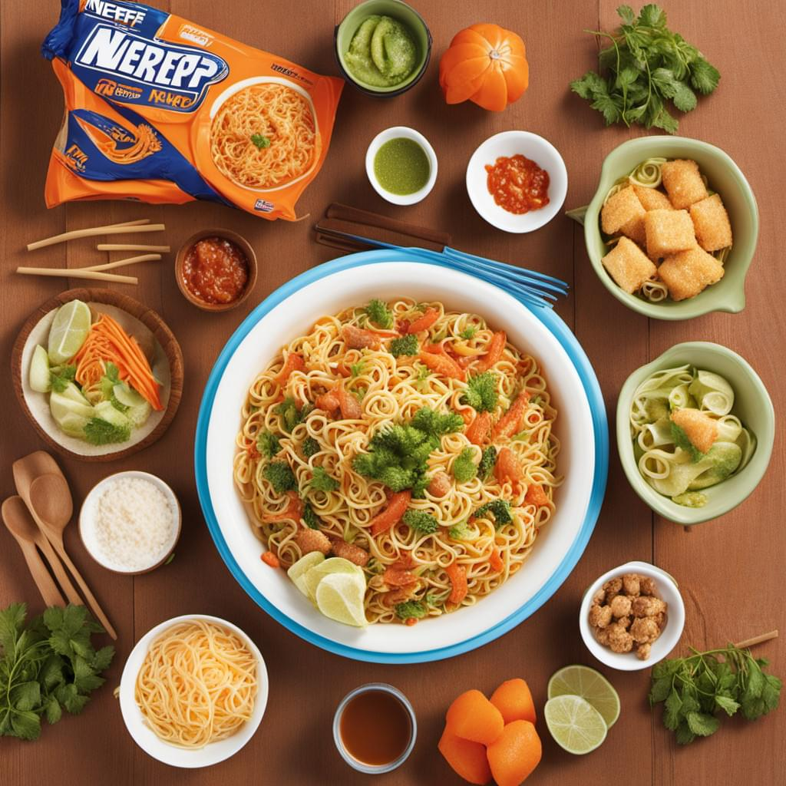

Celebrate World Noodle Day with NERF
Do you love noodles? Do you love NERF blasters? Then get ready to celebrate, because September 5th is both World Noodle Day and Nerf Lover’s Day!
World Noodle Day: A Global Celebration of Deliciousness
World Noodle Day is a global celebration of everyone’s favorite slurpy, comforting food. Whether you prefer spaghetti, udon, or ramen, this day is all about enjoying the delicious variety of noodles from around the world.
To celebrate World Noodle Day with NERF, why not organize a Noodle Bowl Party? Invite your friends over for a fun-filled evening of noodle dishes and NERF battles. You can even have a “Noodle Off” competition to see who can make the best bowl of noodles. The winner gets bragging rights and a special prize – a new NERF blaster, of course!
Nerf Lover’s Day: A Day Dedicated to Fostering Fun with Foam
Nerf Lover’s Day is all about celebrating the spirit of NERF and its impact on millions of people around the world. From foam darts to blasters, this day encourages everyone to get active, have fun, and bond with friends and family through engaging NERF battles and games.
To celebrate Nerf Lover’s Day, gather your fellow NERF enthusiasts for a foaming good time. You can host a NERF war in your backyard or local park, organize an outdoor foam battle, or even create a custom NERF obstacle course. Don’t forget to share your excitement with the hashtag #NerfLoversDay on social media!
Why Celebrate Both World Noodle Day and Nerf Lover’s Day?
By celebrating both World Noodle Day and Nerf Lover’s Day, you can create a unique combination of fun experiences for your friends, family, or colleagues. These two holidays have one thing in common: they promote enjoyment, bonding, and creativity. By combining them, you can create unforgettable moments that bring people together while indulging in their favorite things – delicious noodles and thrilling NERF battles!
In conclusion, September 5th is the perfect opportunity to celebrate your love for noodles and NERF blasters. Gather your friends, family or colleagues and revel in these fun-filled celebrations with unique ideas that combine both interests. Don’t forget to share your World Noodle Day and Nerf Lover’s Day experiences on social media using the hashtags #WorldNoodleDay and #NerfLoversDay!